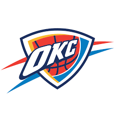

NBA Teams To Watch This Season
Oklahoma City Thunder
The Oklahoma City Thunder is one of the youngest teams within the NBA, especially considering the aging stars of the league still having a prominent place in top teams. Despite facing against legends, the young core of OKC is driven by a pool of talent and an endless drive for success that makes them one of the most fun teams to watch this season.
It's top players, in terms of their value are:- Shai Gilgeous-Alexander
- Chet Holmgren
- Luguentz Dort
- Alex Caruso
Denver Nuggets

Watching Nuggets play basketball never seems to be boring. On some days the entire roster puts in the work to come out on top, and on some days it seems like Nikola Jokic is the only driving force behind the team's success. However, as a fan of both him and the Nuggets since their championship run, I can say that watching the young players of Denver develop into their roles and show that they can burden the responsibilities they're being asked of has been one of my greatest pleasures. Jokic's skill, both in terms of the game and as a leader in charge of the team, will cement his place as an all-time level talent if Denver make it deep into the play-offs. While a championship does not seem likely this year despite the addition of Russel Westbrook into the roster, you can be guaranteed that being a Nugget is never boring.